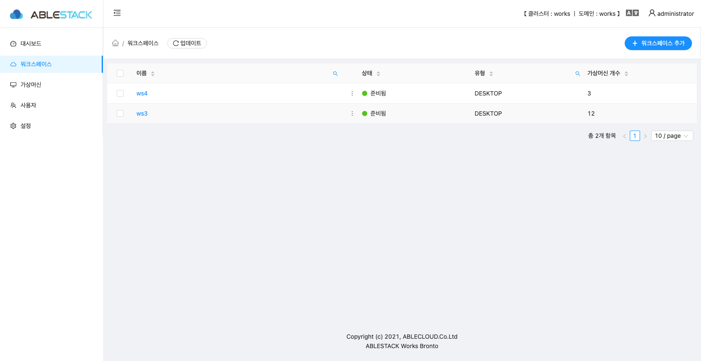
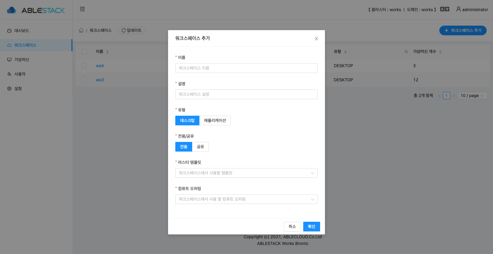
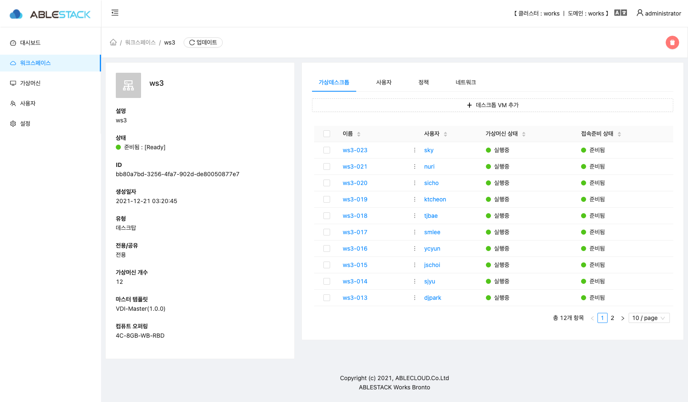
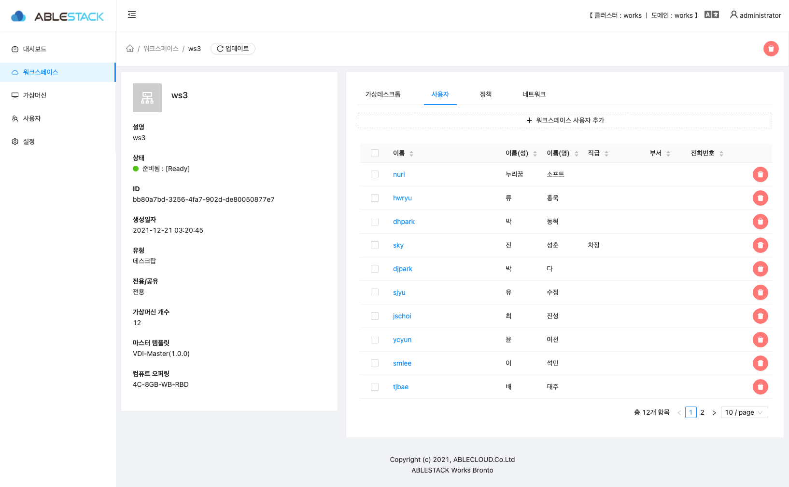
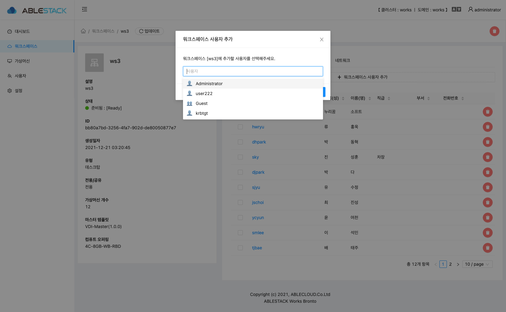
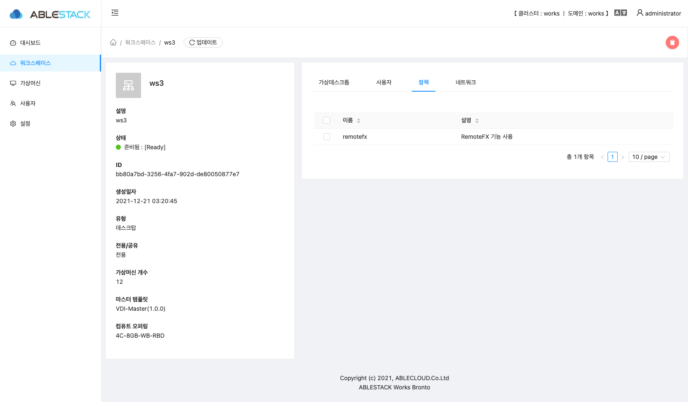
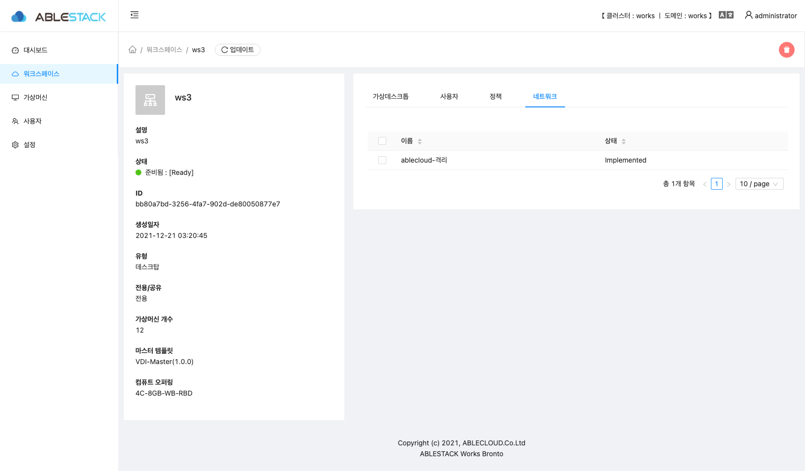
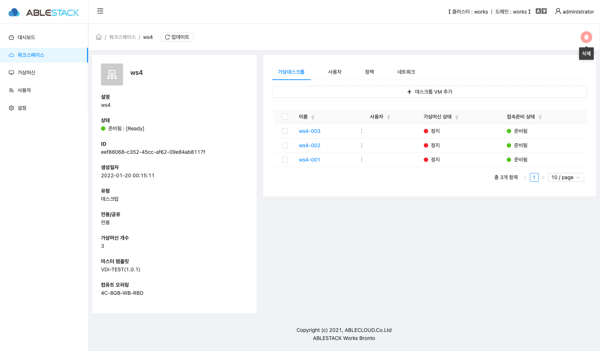
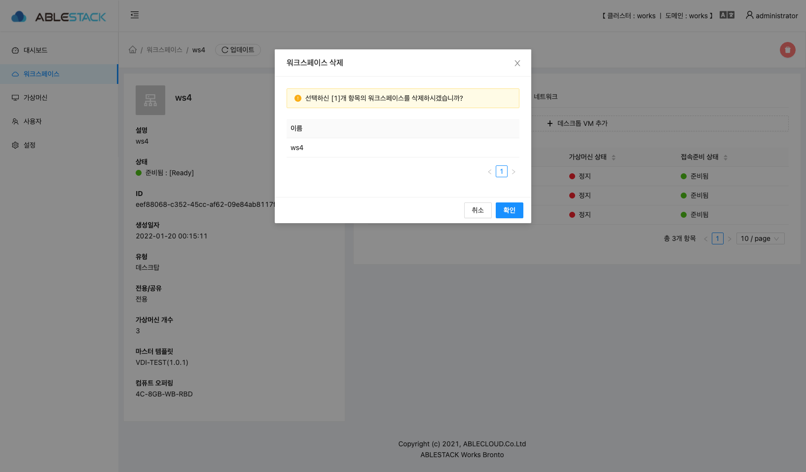

Works 워크스페이스¶
Works 의 워크스페이스 리스트 정보, 워크스페이스 생성 및 삭제등 각종 액션을 할 수 있는 페이지 입니다.

워크스페이스 리스트¶
해당 데스크톱 클러스터에서 생성된 워크스페이스 리스트를 확인 할 수 있습니다.
- 이름 : 워크스페이스 이름 정보를 보여 줍니다.
- 상태 : 워크스페이스의 상태 정보를 보여 줍니다.
- 유형 : 워크스페이스의 유형 정보를 보여 줍니다.
- 가상머신 개수 : 워크스페이에 생성된 데스크톱 수량을 보여줍니다.
Info
대시보드의 각 정보를 클릭하면 상세 정보 페이지로 이동합니다.
- 워크스페이스 추가 : 새로운 워크스페이스를 생성할 경우 해당 버튼을 클릭 합니다. 해당 버튼을 클릭하면 워크스페이스를 추가 할 수 있는 모달 창이 열립니다.
워크스페이스 추가¶
 - 이름 : 워크스페이스의 이름을 입력 합니다. - 설명 : 워크스페이스의 설명을 입력 합니다. - 유형 : 워크스페이스의 유형을 선택합니다.
Warning
현재 Works 는 데스크탑 만 지원하며, 추후에 애플리케이션 유형을 지원할 예정입니다.
- 전용/공유 : 워크스페이스 사용 형태를 선택합니다.
Warning
현재 Works 는 전용 서비스만 지원하며, 추후에 공유 사용 형태를 지원할 예정입니다.
- 마스터 템플릿 : Mold 에서 등록한 마스터 템플릿을 선택 합니다.
- 컴퓨트 오퍼링 : 사용자 데스크톱의 오퍼링을 선택합니다.
Info
- 사용자 데스크톱 오퍼링은 Mold 에서 미리 생성되어 있어야 하며 해당 오퍼링을 지정하면 해당 워크스페이스에서 생성된 모든 데스크톱은 동일한 오퍼링으로 생성됩니다.
- 만약에 오퍼링 변경이 필요한 경우 Mold 관리자에게 해당 데스크톱 오퍼링 변경을 요청하여야 합니다.
- 입력한 정보 및 선택한 정보를 확인 후에 확인 버튼을 클릭하면 해당 정보로 워크스페이스가 생성이 됩니다.
Info
- 워크스페이스 생성시 선택된 마스터 템플릿에서 필요한 서비스가 정상적으로 설치 되여 있는지 확인절차를 진행 합니다. 진행 시간은 환경에 따라 다르지만 10분정도 소요됩니다.
- 마스터 템플릿이 정상적이면 워크스페이스의 상태 정보가 준비됨 : [Ready] 로 변경 됩니다.
워크스페이스 상세 정보¶

- 이름 : 해당 워크스페이스의 이름 정보를 보여 줍니다.
- 설명 : 해당 워크스페이스의 설명 정보를 보여 줍니다.
- 상태 : 해당 워크스페이스의 상태 정보를 보여 줍니다.
- ID : 해당 워크스페이스의 UUID 정보를 보여 줍니다.
- 생성일자 : 해당 워크스페이스의 생성일자 정보를 보여 줍니다.
- 유형 : 해당 워크스페이스의 유형 정보를 보여 줍니다.
- 전용/공유 : 해당 워크스페이의 사용 형태 정보를 보여 줍니다.
- 가상머신 개수 : 해당 워크스페이스에서 생성된 데스크톱 수량을 보여 줍니다.
- 마스터 템플릿 : 해당 워크스페이스의 마스터 템플릿 정보를 보여 줍니다.
- 컴퓨트 오퍼링 : 해당 워크스페이스의 컴퓨트 오퍼링 정보를 보여줍니다.
워크스페이스 가상데스크톱 리스트¶
워크스페이스에서 생성된 가상데스크톱 리스트를 보여줍니다. - 이름 : 가상데스크톱의 이름을 보여 줍니다. - 사용자 : 가상데스크톱에 할당된 사용자 정보를 보여 줍니다. - 가상머신 상태 : 가상데스크톱의 상태 정보를 보여 줍니다. - 접속준비 상태 : 가상데스크톱 접속 준비 상태를 보여 줍니다. - + 데스크톱 VM 추가 : 해당 버튼을 클릭하여 해당 워크스페이스의 데스크톱을 추가 할 수 있습니다.
워크스페이스 가상데스크톱 추가¶
 해당 워크스페이에 가상데스크톱을 추가하는 모달 화면입니다.
추가할려는 수량을 입력 후 확인 버튼을 클릭하면 해당 수량 만큼 데스크탑이 추가됩니다.
해당 워크스페이에 가상데스크톱을 추가하는 모달 화면입니다.
추가할려는 수량을 입력 후 확인 버튼을 클릭하면 해당 수량 만큼 데스크탑이 추가됩니다.
사용자 리스트¶
 워크스페이스에 추가된 사용자 리스트를 보여줍니다. - 이름 : 사용자 이름을 보여 줍니다. - 이름(성) : 사용자 성을 보여 줍니다. - 이름(명) : 사용자 명을 보여 줍니다. - 직급 : 사용자 직급을 보여 줍니다. - 부서 : 사용자 부서를 보여 줍니다. - 전화번호 : 사용자 전화번호를 보여 줍니다. - + 워크스페이스 사용자 추가 : 생성된 유저를 해당 워크스페이스에 추가하는 버튼입니다.
워크스페이스 사용자 추가¶
 워크스페이스에 사용자를 추가하는 모달 화면입니다. 사용자 생성은 사용자 메뉴에서 생성이 가능하며 해당 화면에서는 생성된 사용자를 워크스페이스 그룹에 추가하는 기능입니다.
워크스페이스 정책 리스트¶
 워크스페이스에 적용된 정책 정보를 보여주는 화면입니다.
Info
현재 Works 에서는 별도의 정책을 추가하거나 삭제 할 수 있는 기능이 없습니다. 정책을 추가 또는 삭제해야 하는경우 DC 에서 해당 워크스페이스와 동일한 그룹에 정책을 추가 또는 삭제하면 해당 워크스페이스에도 동일한 정책이 적용됩니다.
- 이름 : 해당 워크스페이스에 적용된 정책의 이름을 보여 줍니다.
- 설명 : 해당 워크스페이스에 적용된 정책의 설명을 보여 줍니다.
워크스페이스 네트워크 리스트¶
 워크스페이스가 생성된 네트워크 정보를 보여 주는 화면 입니다. - 이름 : 네트워크 이름을 보여 줍니다. - 상태 : 네트워크 상태를 보여 줍니다.
워크스페이스 액션¶
워크스페이스 삭제¶
 
- 삭제 할려는 워크스페이스 정보에서 오른쪽 상단의 삭제 버튼을 클릭 합니다.
- 워크스페이스 이름을 확인 후에 확인 버튼을 클릭하면 워크스페이스가 삭제 됩니다.